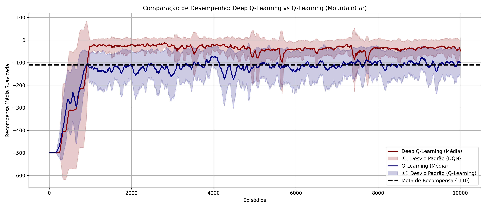

Comentários sobre as últimas implementações
Nas últimas semanas foram feitas várias implementações que tinham como objetivos:
- compreender melhor como funcionam os algoritmos Deep Q-Learning e suas variantes, Reinforce e A2C.
- a dinâmica de treinamento de agentes em diferentes ambientes, tais como, Mountain Car, Cart Pole, Lunar Lander e Breakout.
- exercitar técnicas para avaliar algoritmos e o aprendizado de agentes.
- exercitar o uso de bibliotecas de algoritmos e ambientes.
Uso de DQN e Q-Learning no ambiente Mountain Car
Nem todos os resultados foram iguais aos apresentados abaixo:




Mas, algo que pode-se perceber é que o algoritmo DQN tem um desempenho superior.
Os parâmetros que geraram curvas com um aprendizado mais rápido foram:
| Modelos | Gamma | Epsilon | Epsilon mínimo | Epsilon decay | Episódios | Batch size | Learning rate | Memória de replay | Max steps |
|---|---|---|---|---|---|---|---|---|---|
| Modelo1 | 0.99 | 1 | 0.01 | 0.995 | 1000 | 128 | 0.001 | 50000 | 2500 |
| Modelo2 | 0.99 | 1 | 0.01 | 0.999 | 700 | 64 | 0.0004 | ||
| Modelo3 | 0.99 | 1 | 0.01 | 0.995 | 2000 | 64 | 0.001 | 10000 | 500 |
DDQN no ambiente Lunar Lander
O objetivo desta atividade era comparar as diversas versões do algoritmo DQN no ambiente Lunar Lander. Abaixo são apresentados alguns resultados obtidos:


Os hiperparâmetros utilizados nos dois casos foram:
gamma = 0.99
epsilon = 1.0
epsilon_min = 0.01
epsilon_dec = 0.0067
episodes = 1000
batch_size = 64
memory = deque(maxlen=10000)
max_steps = 1000
alpha = 0.001
reward_avg_tol = 250
copy_nn = 100
A arquitetura da rede neural utilizada no primeiro caso foi:
class DQNModel(nn.Module):
def __init__(self, input_dim, output_dim):
super(DQNModel, self).__init__()
self.fc1 = nn.Linear(input_dim, 512) # First Dense layer
self.fc2 = nn.Linear(512, 256)
self.fc3 = nn.Linear(256, output_dim) # Output layer
def forward(self, x):
x = F.relu(self.fc1(x))
x = F.relu(self.fc2(x))
return self.fc3(x) # No activation on output (equivalent to linear activation)
Arquiteturas similares foram usadas em outras implementações.
DQN e A2C nos ambientes CartPole-v1, LunarLandar-v3 e Breakout
O objetivo desta atividade foi treinar agentes usando os algoritmos DQN e A2C para os ambientes CartPole-v1, LunarLandar-v3 e Breakout.
Foram selecionados alguns repositórios que apresentaram uma implementação e análise mais completa:
- https://github.com/insper-classroom/08-dqn-vs-a2c-super_j_schulman
- https://github.com/insper-classroom/08-dqn-vs-a2c-p-j
- https://github.com/insper-classroom/08-dqn-vs-a2c-fruto_devontade_divina
- https://github.com/insper-classroom/08-dqn-vs-a2c-catapimbas
Comparando os algoritmos DQN, A2C e PPO
No semestre passado foi feita uma atividade de comparação de algoritmos em diferentes ambientes. O objetivo desta atividade foi comparar o desempenho de diferentes algoritmos de reinforcement learning em diferentes ambientes.
Os algoritmos comparados foram:
- DQN
- A2C
- PPO
Foi utilizado as implementações da biblioteca https://stable-baselines3.readthedocs.io/en/master/.
Os ambientes que utilizados na comparação foram:
- Bipedal Walker
- Car Racing, discreto e contínuo
- CartPole
- Lunar Lander
Foram utilizados os ambientes disponibilizados na biblioteca https://gymnasium.farama.org/
O relatório final desta atividade pode ser visto neste link. O link para todo o repositório da atividade é https://github.com/fbarth/rl_compare.
Atividade proposta: análise subjetiva de um agente treinado
Entre os repositórios disponíveis,
- identificar o melhor modelo para Breakout salvo e utilizar o mesmo para visualizar o que seria o comportamento esperado de um agente que sabe jogar Breakout.
- identificar um modelo de Breakout salvo qualquer e utilizar o mesmo para comparar o comportamento deste agente com um agente que teve um reward acumulado maior.